第一幕 · 穿越觉醒
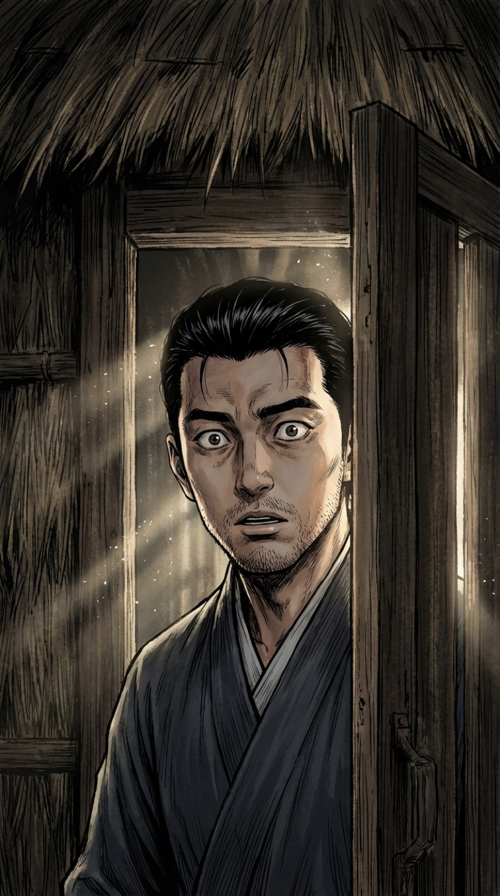
朱江猛然睁开眼。最后的记忆是在公司加班到凌晨三点半——下一秒，他就在这间破茅屋里了。空气中有奇怪的能量波动，像是有电流在皮肤上爬。
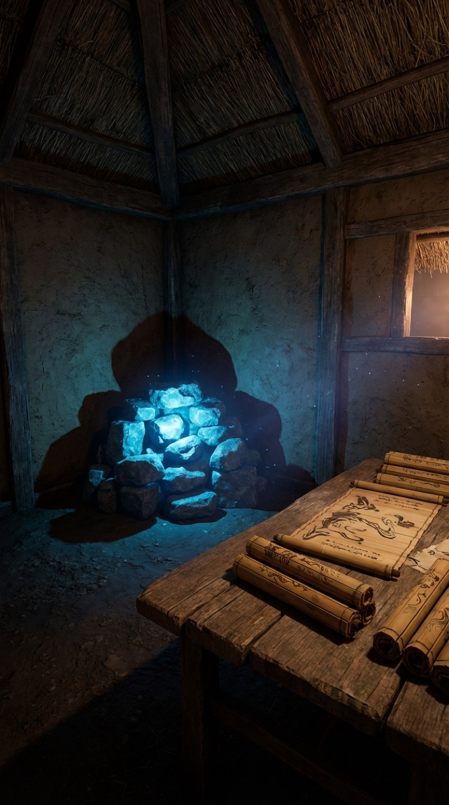
茅屋简陋到极致。但墙角几块微微发光的石头引起了他的注意。拿起一块，一股暖流从手心传入——这是灵石，修仙世界的硬通货。
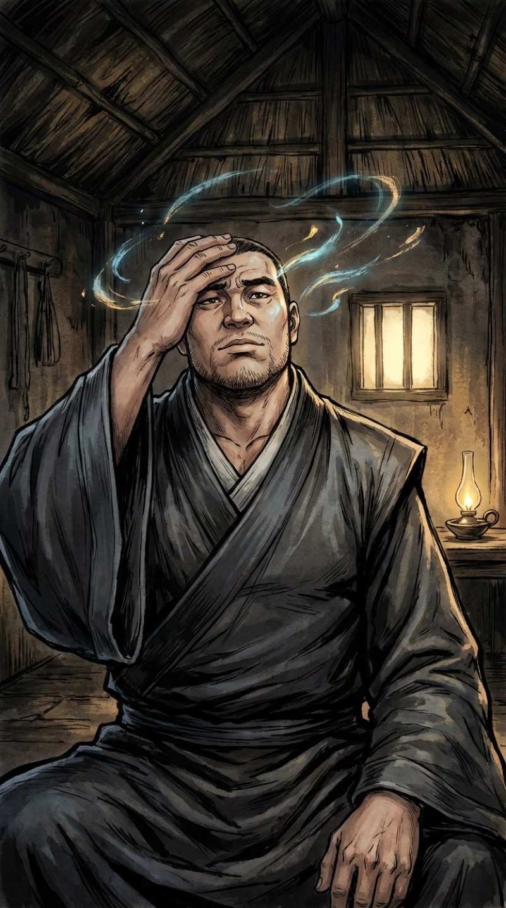
一段陌生记忆涌入脑海。原主人叫"江尘"，散修，灵根测试为最低的"杂灵根"，被三大宗门拒之门外，靠捡废灵石为生。
（朱江消化完记忆，深吸一口气。）
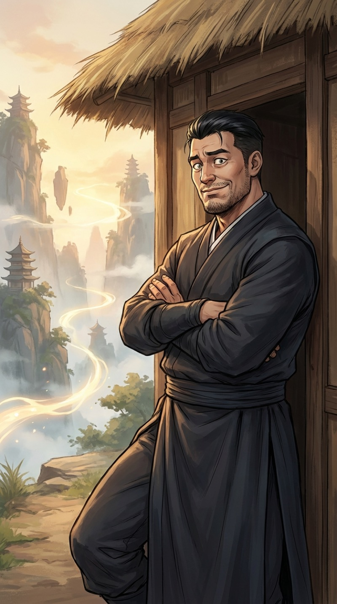
创业十年见过无数次"从零开始"，没想到这次字面意义上从零开始。不过话说回来——从零到一这事我干了十年了，这次连灵根都是零。
⚡ 决策点一 · 第一反应
穿越到修仙世界，灵根最差，一无所有。怎么办？
A. 立刻寻找回去的方法
✦ B. 先搞清楚这个世界的规则再行动
C. 找个大宗门投靠，哪怕做最底层
黑客基因+创业者直觉——先理解系统再行动。"天然好奇系统怎么运作，喜欢拆开看结构。"
第二幕 · 市场调研
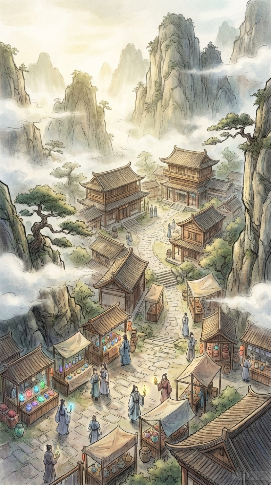
落云镇——修仙世界底层散修聚集地。简陋的灵石交易摊位、修补法器的小作坊、贩卖低阶丹药的小贩。朱江一眼就看出了门道：这里是散修的"批发市场"。
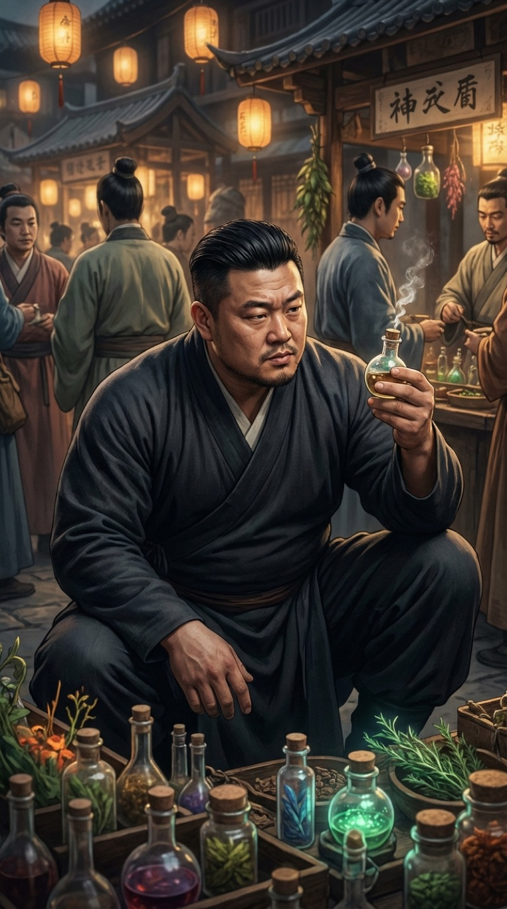
朱江花了两个时辰逛完整个市场。创业者的职业病发作——他在心里已经画了一张市场地图：供给端、需求端、价格……全部混乱。
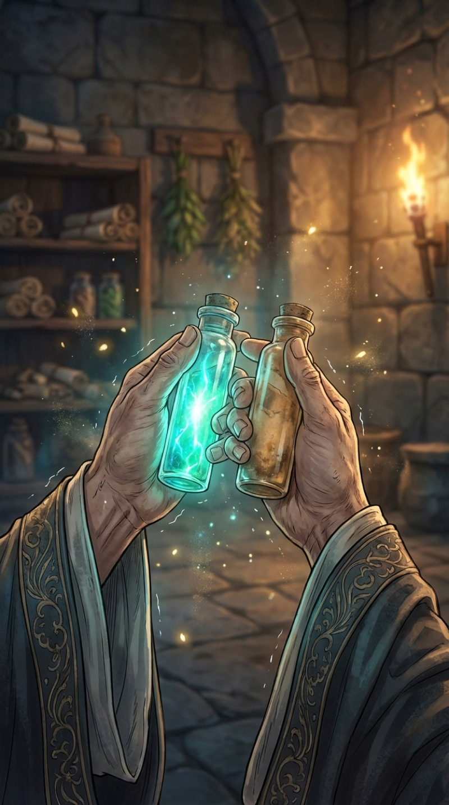
两瓶"聚气丹"，成色天差地别，但卖价几乎一样——散修们根本没有鉴别能力。劣币驱逐良币。
经典的"柠檬市场"——信息不对称导致市场失灵。诺贝尔经济学奖早就研究明白了，你们修仙界落后了几千年。
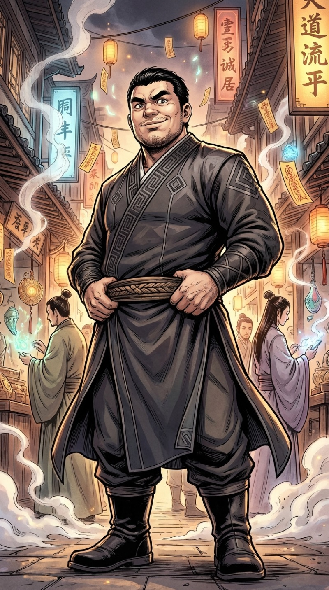
信息不对称、供应链低效、品控缺失、定价混乱——每一个都是创业者最爱的痛点。
朱江双手插在道袍腰带里。不是因为帅，是因为道袍没有口袋。
⚡ 决策点二 · 切入点选择
市场痛点很多，但资源有限（只有几块捡来的灵石），必须选一个最小切入点。
✦ A. 做"丹药鉴定服务"——利用信息差赚第一桶金
B. 直接学炼丹，用SOP思维提升良品率
C. 做"灵石借贷"——金融手段撬动资源
创业者第一课：最小可行产品。先用信息差变现，验证市场需求。不会一上来就重投入。
第三幕 · MVP验证
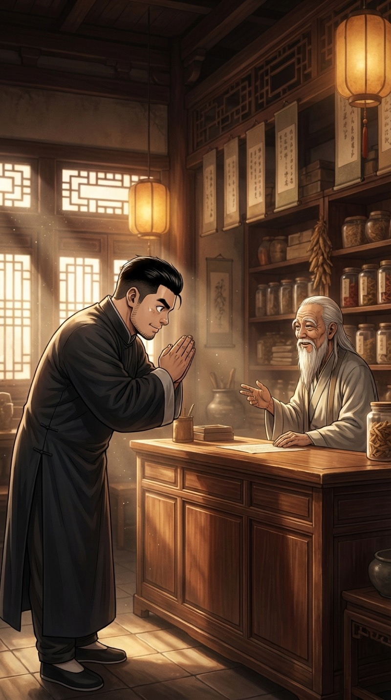
齐伯是落云镇唯一会鉴定丹药的老散修。朱江花两块灵石"请教"鉴定基础——其实是在做知识付费。老人看他诚恳，教了基本功。
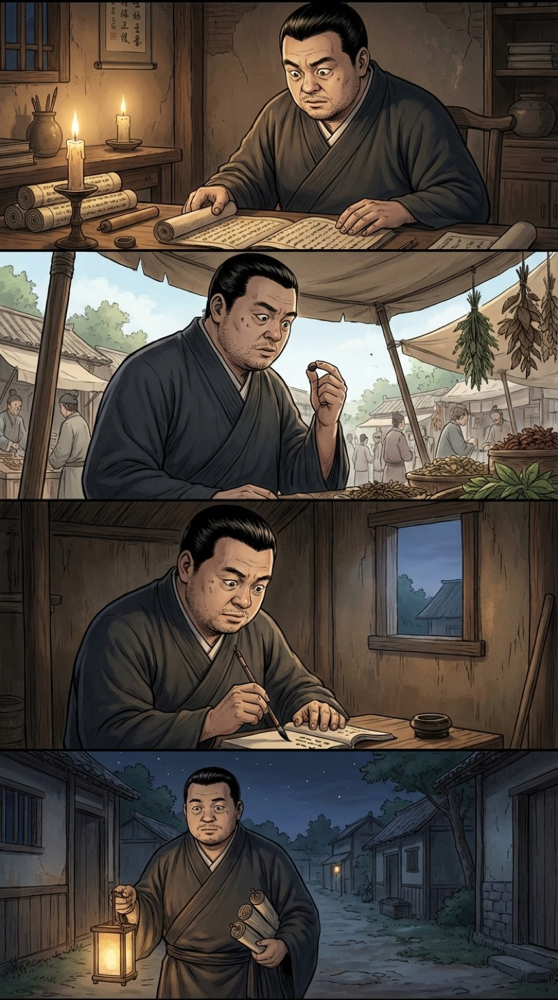
三天时间，朱江掌握了基础鉴定术。不是因为天赋，而是因为他有一套"系统化学习法"——创业者的学习速度本来就不是正常人。
"这年轻人……学得也太快了。"齐伯喃喃自语。
⚡ 决策点三 · 鉴定能力变现
掌握了基础鉴定能力，如何变现？
A. 在市场摆摊做鉴定收费
✦ B. 先免费鉴定，积攒口碑后再收费
C. 暗中低价收购好丹药，高价卖出
"菩萨心肠"——朱江的创业方式从来不是赚快钱，而是先建立信任。互联网创业者DNA：用户第一、先做口碑。
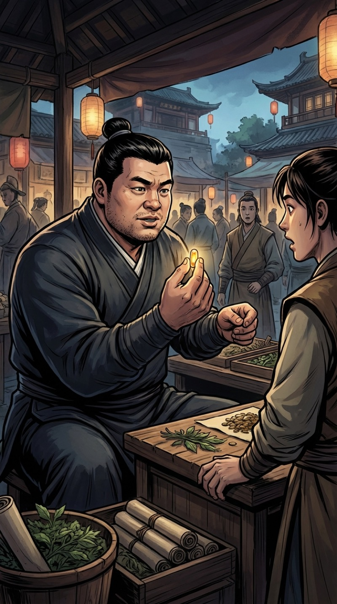
"这瓶聚气丹品质七成，值五块灵石，你花了八块？"
散修目瞪口呆。消息很快传开——有个新来的小子，免费帮人看丹药真假。
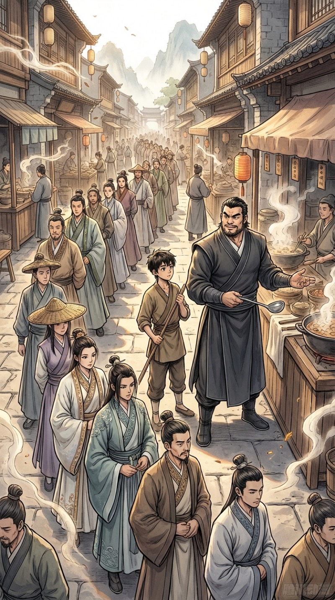
第三天，排队的人已经绕了半条街。朱江免费鉴定，但每次都会随口说一句——
"如果觉得有用，帮我跟朋友说一声。"
转介绍，最古老也最有效的增长飞轮。裂变增长，用在了修仙世界。
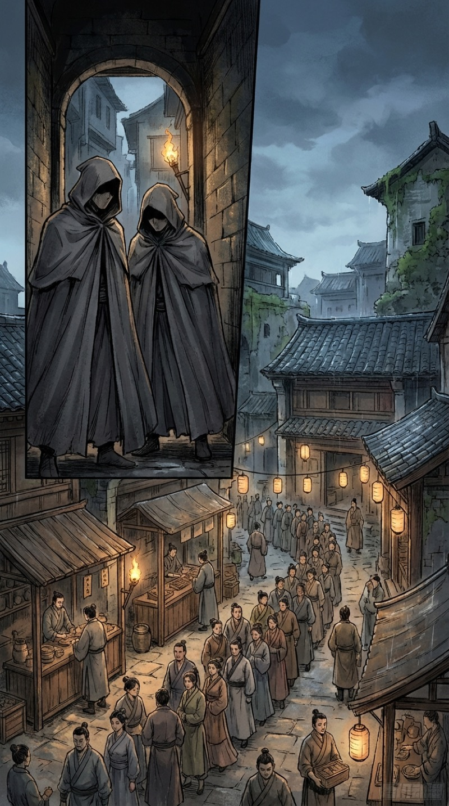
苍云商会——落云镇最大的丹药中间商。朱江的免费鉴定让散修们不再盲买，直接冲击了苍云商会的利润。暗处，两个灰袍人在窃窃私语。
⚡ 决策点四 · 面对威胁
苍云商会派人来"友善提醒"朱江别多管闲事。
A. 退缩，不想惹事
B. 直接怼回去
✦ C. 表面答应，暗中继续，收集苍云的猫腻作为筹码
"菩萨心肠霹雳手段"——不硬碰硬，但绝不退缩。信息是最大的武器。P2优先，提前消灭火源。
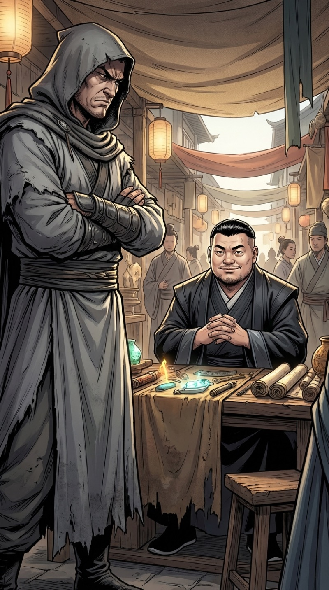
"朋友，你这免费鉴定，搞得大家没法做生意了。"灰袍男子笑着说，但笑容没到眼睛。
"理解理解，我这小摊，哪能跟苍云商会比。"
话说得很软，但朱江的手已经在袖子里记下了灰袍上的编号。
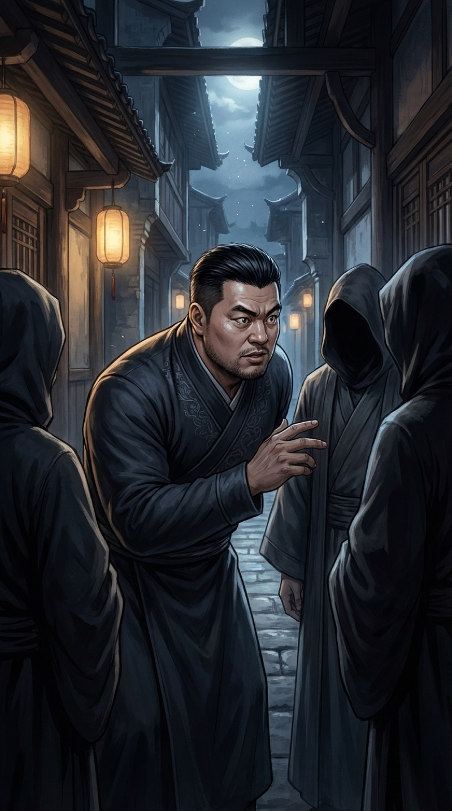
连续三个晚上，朱江摸清了苍云商会的模式：低价收购、劣质掺假、信息不对称赚差价。
经典的"中间商赚差价+掺假"组合。商业史上见过太多次了。
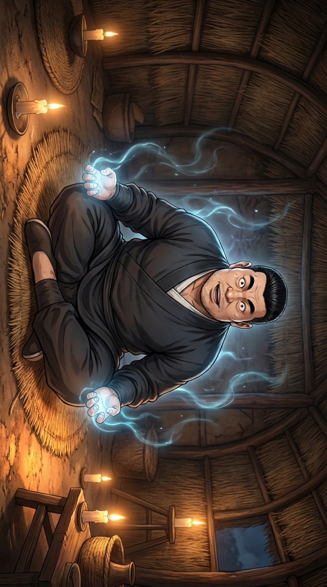
研究鉴定术的过程中，朱江无意间触碰到了"道"的一丝本质。他的灵根虽差，但"感知"能力极强。
齐伯说我的灵根像一把钝刀，什么都沾点但什么都不精。但这不就是——"全栈型人才"吗？
⚡ 决策点五 · 修炼方向
杂灵根虽弱但感知力强，需要选择修炼方向。
A. 专攻一种灵根属性，走传统路线
✦ B. 利用杂灵根的"全栈"特性，走跨领域融合路线
C. 放弃战斗修炼，全力发展辅助路线
黑客精神+连续创业者DNA。从来不走传统路线。"全栈"就是竞争优势——商业世界里最强的人就是能跨界整合的人。
第四幕 · 标准化革命
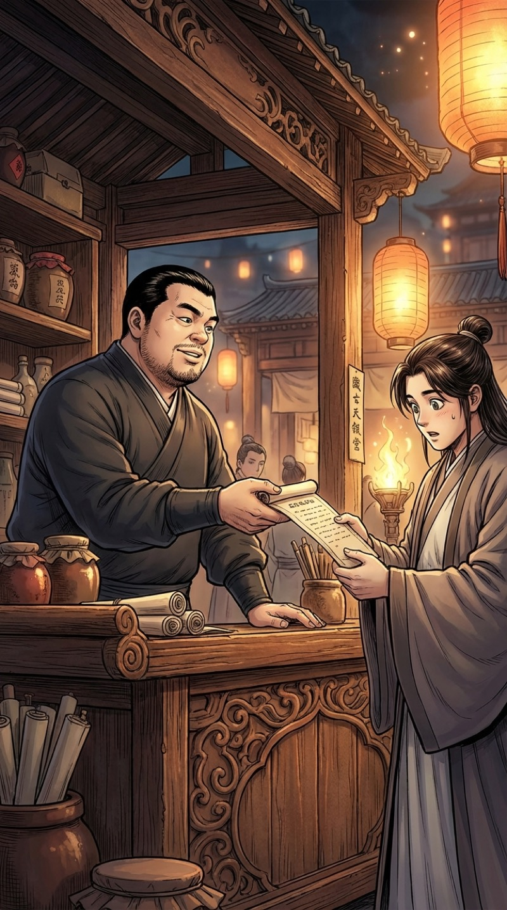
免费鉴定积攒了足够口碑后，朱江推出"付费服务"：不只告诉你这丹药好不好，还给出标准化评级。
散修们第一次知道丹药能像淘宝评分一样打星。
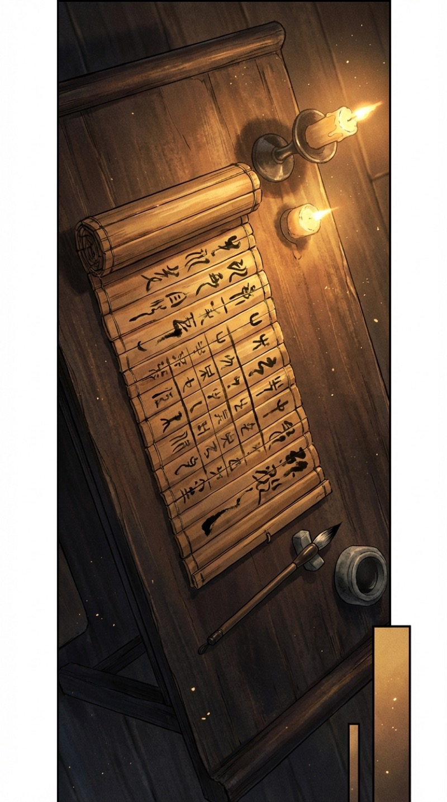
朱江做了一件修仙界从没人做过的事——发布了"落云镇丹药标准定价表"。根据品质等级对应合理价格区间。这张表，一夜之间传遍了落云镇。
⚡ 决策点六 · 标准之战
定价表引爆了市场，苍云商会正式下场——威胁要"清理"朱江。镇上几个正义散修愿意帮忙，但实力悬殊。
A. 联合散修正面对抗
✦ B. 把定价表和掺假证据一起公开，制造舆论压力
C. 找到苍云背后的靠山，直接谈判合作
信息战成本最低、杠杆最高。先把苍云的猫腻曝光，让舆论站在自己这边。
第五幕 · 信息战
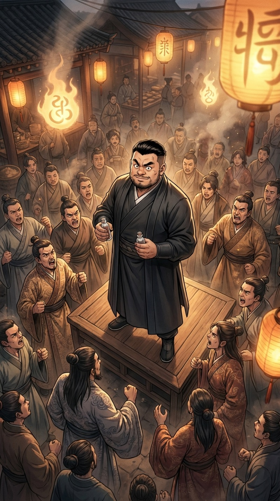
朱江在市场中心搭起大型展示台，当众鉴定苍云商会的丹药，揭露掺假。围观群众越来越多，越来越愤怒。
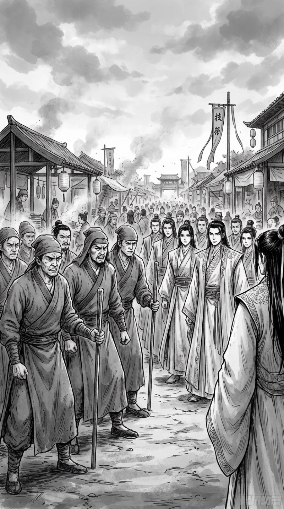
苍云商会派人来砸场。但围观散修太多，他们不敢轻举妄动。人群的力量，在任何世界都一样。
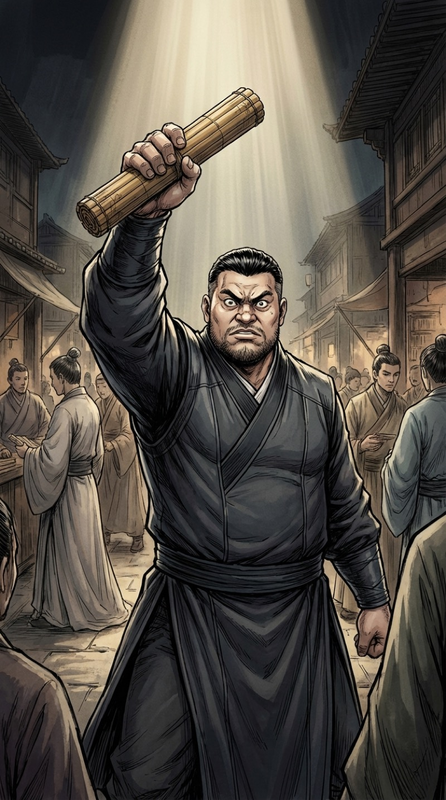
杀手锏——朱江拿出暗中收集的苍云商会内部掺假记录。铁证如山。
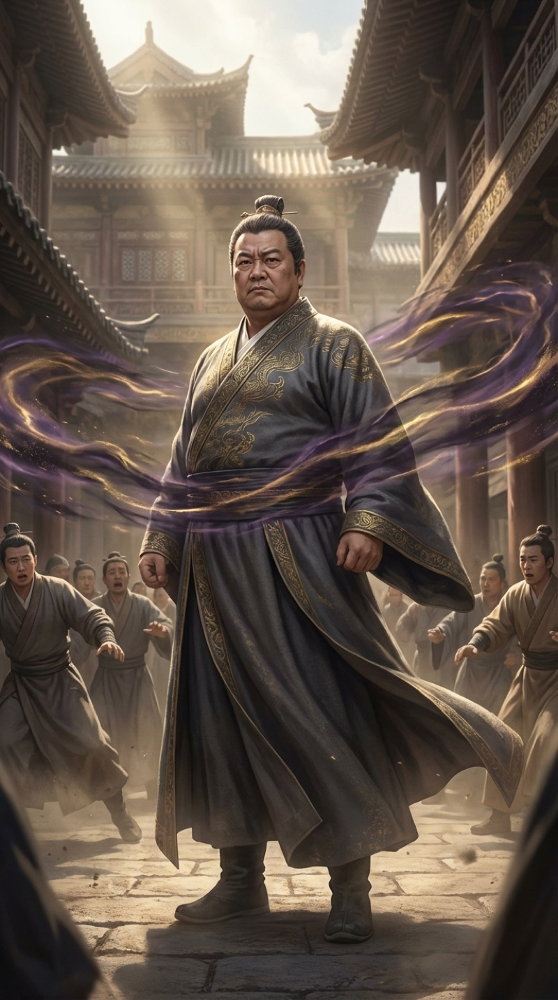
苍云商会老板亲自出面。一个中年胖修士，修为远超在场所有人。灵压如山，围观群众退了半步。
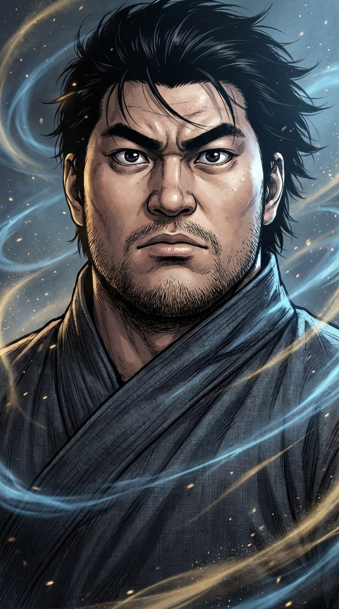
朱江面对实力碾压，没有退缩。
创业十年，见过比这更大的压力。投资人撤资那晚，可比这灵压猛多了。
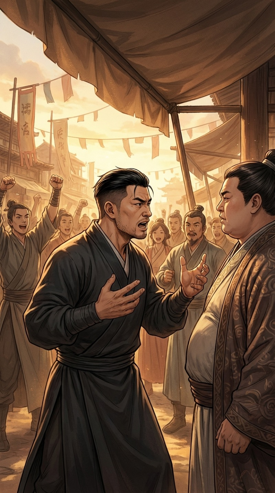
"你可以打我，但你打不掉这张定价表。它已经在每个散修心里了。"
信息传播不可逆——这是互联网基本原理。你个修仙的不懂。
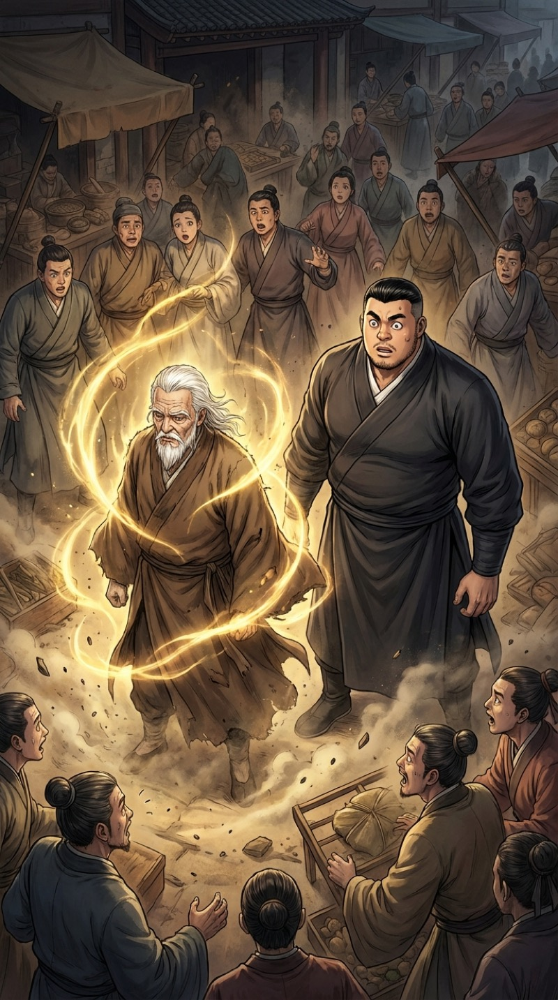
齐伯站了出来。释放出一丝久违的气息，全场震动。苍云老板脸色大变——这个打瞌睡的老头，竟然是……
局面，瞬间逆转。
第六幕 · 成交
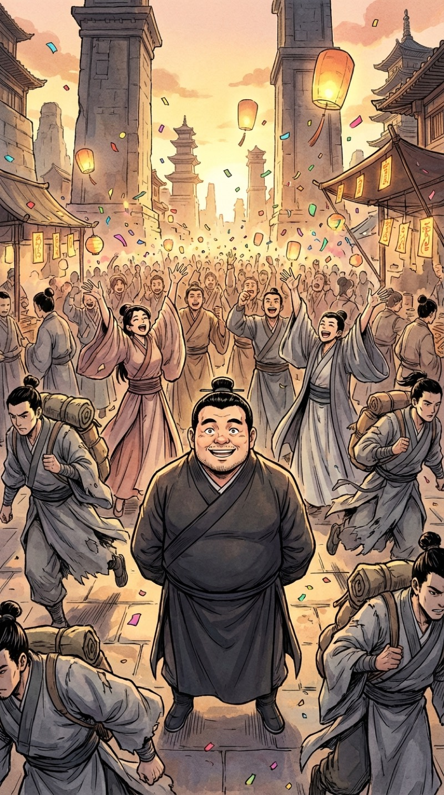
苍云商会灰溜溜撤退。市场爆发欢呼。散修们第一次感受到——信息透明的力量。
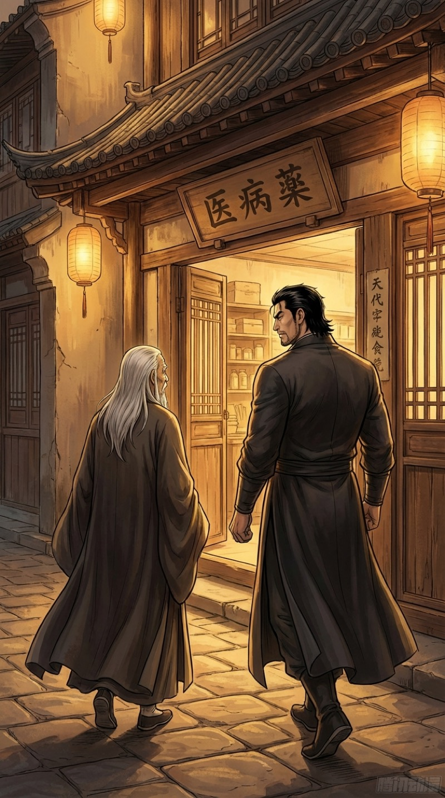
夕阳下，齐伯和朱江两个身影走入药庐。一个时代的开端，往往就藏在这样安静的角落里。
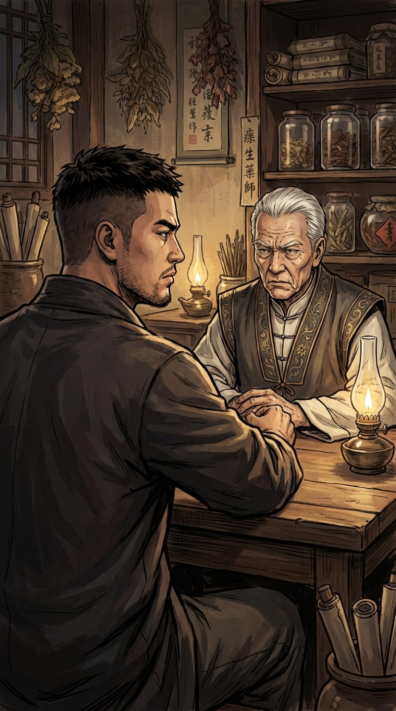
"万毒谷。我需要你帮我去采一味药材。"齐伯的表情前所未有的严肃。
"万毒谷？听名字就不太友善……"
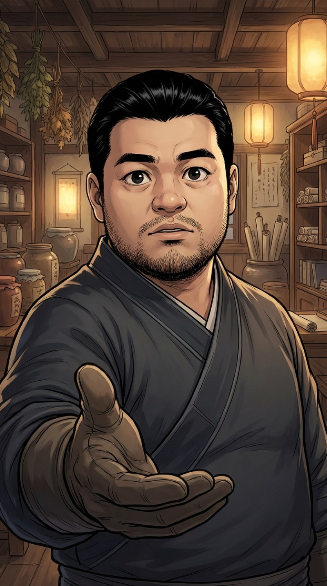
"齐伯，我帮您采药。但您得教我高阶炼丹术。公平交易。"
朱江伸出手。齐伯盯着他看了很久。
创业者永远在做deal。答应帮忙是善良，要求等价回报是商业素养。
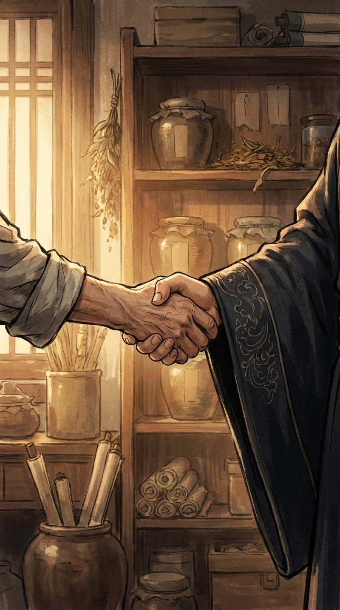
"成交。"
齐伯第一次笑了。两只手握在一起——商业世界最古老的契约方式。